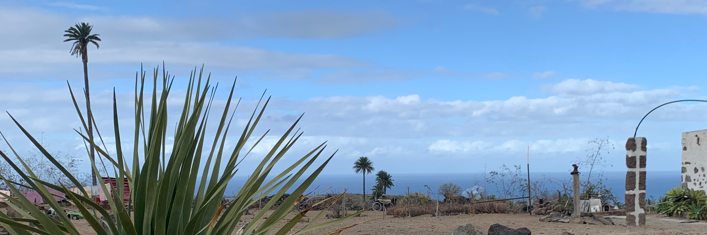
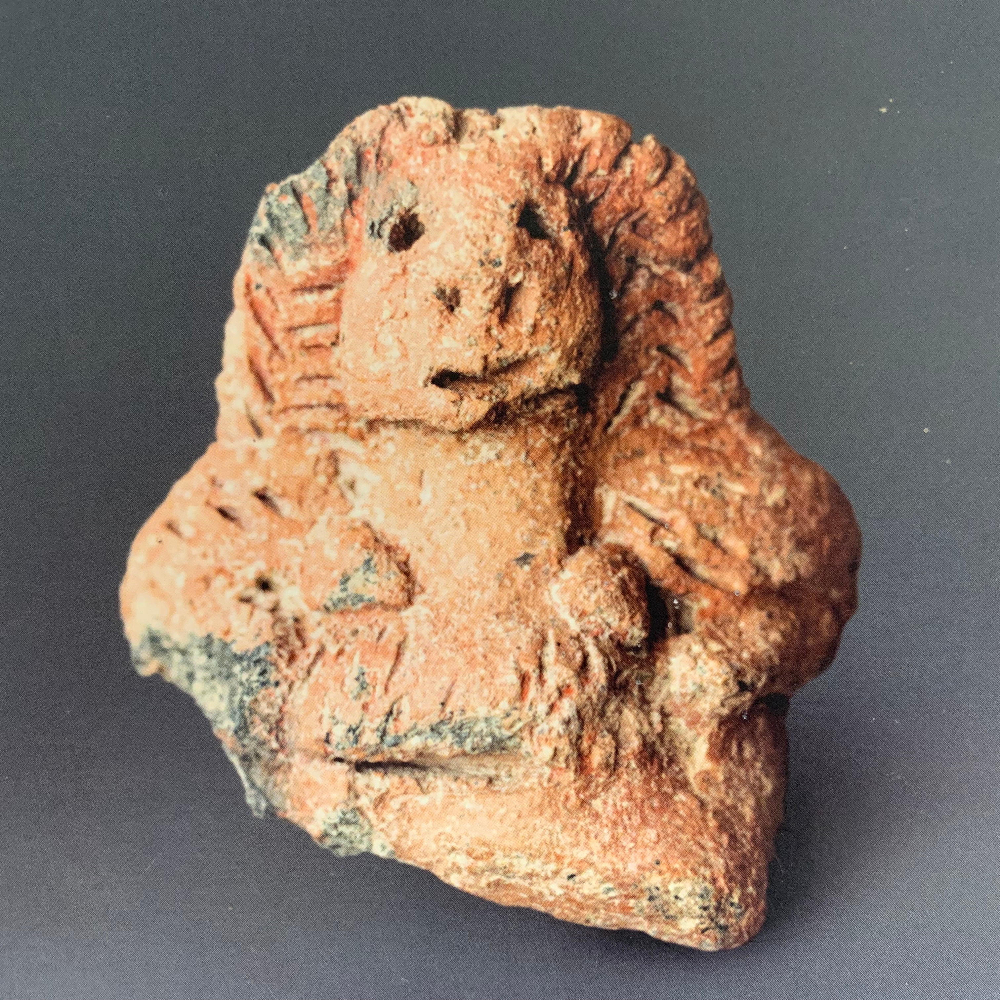

This unique 8000sqm campsite is located in the beautiful and wild north of Gran Canaria at a
special place with an interesting history. It is a quiet place in nature, right
above a barranco, with beautiful views of the ocean, the mountains and the village,
great for hikes, bikes, surfers, climbers but also for writers, painters, other artists,
and families. It's one of the few places on the island where you can sleep in a tent.
Although it's quiet and away from the crowds, the next bus station is only 800m away.
Buses to Las Palmas go every 2 hours.
The finca has never been connected to the public electricity. In the evening, from 6 pm to 11 pm,
we have electricity from the generator. Once the solar panels are repaired, we will also
have electricity during the day. The nights are calm and peaceful with views of the stars,
the village and sometimes ferries on the ocean. Don't forget to bring a headlamp or flashlight, because
there are no lamps at night.
An art-in-progress park located in a field by the finca is filled with plants and trees
that were waste to others and got a second chance here. The view to the ocean is dominated
by one of the tallest Phoenix Canariensis palm trees on the island.
The finca was build about 200 years ago. In the past it was used for agriculture. Bananas,
potatoes and many other things have been grown here. For generations, people have inhabited
the caves in the barranco. In the 70s and 80s of the last century, they left them for good.
The caves are currently closed to the public.
In 2020, a pre-hispanic figurine of a woman with beautiful hair, which was named 'Idolo de
Firgas' was found at this place. It was donated to the Museo Canario in Las Palmas for permanent exhibition.


A taxi from the airport can be organized for guests.
When you come out of the airport, you have to cross the parking space to get to the bus station. From the southern part of the station, buses go to the south of the island. From the northern part, they go to the north. From here you take a bus to San Telmo, which is the central bus station of Las Palmas. There are many buses that go there, for example line 1, 60, or 91. You will probably get a bus within a couple minutes.
From Las Palmas, line 204 goes directly to Casablanca, starting from San Telmo, on weekdays at 8:30, 10:30, 12:30, 14:30, 15:30, 17:30, 19:30 and 21:30, on saturdays at 8:30, 12:30, 17:30 and 21:30 (updated: November 2025, times might change). On sundays, there is no direct bus connection, but you can take line 210 or 206 to Arucas, and from there line 211 to Cambalud (Calle Dolores). From here it's about 20 minutes walking, mostly downhill.


{kind=link}
{kind=link}